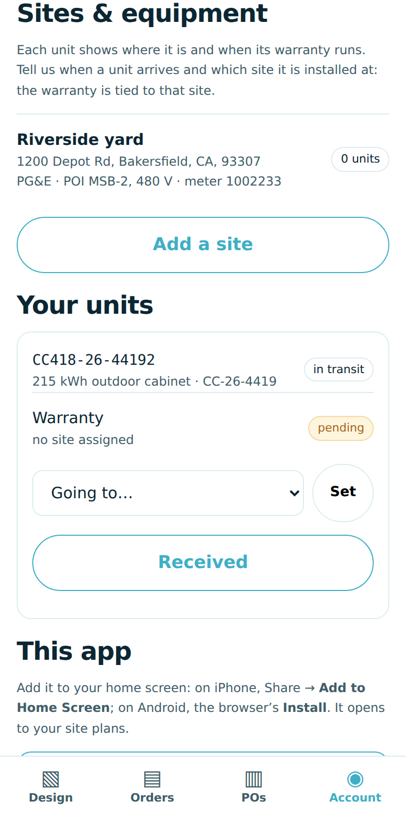
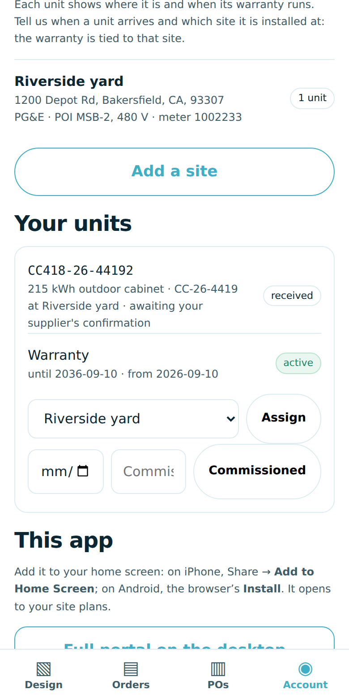
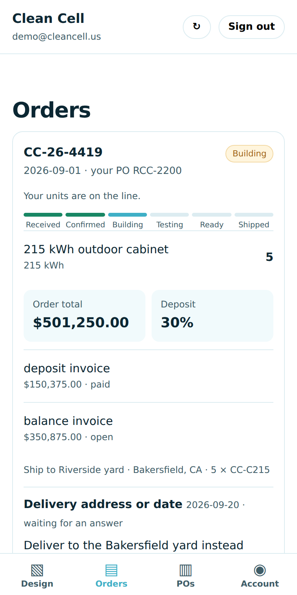

Your account on your phone
Site plans in Editor Lite, your orders with their milestone and warranty, purchase orders, and Sites & equipment: where each unit is going, when it arrived, which site it runs at. From Clean Cell USA, on the ClearSky OMEGA platform.
1. What it is and where it lives
| What | Address | Sign in |
|---|
| Customer app | silmarillion.clearskyomega.com/portals/customer/app?org=cleancell.us | your email (a login link is emailed to you) or Google |
| Customer portal (desktop) | silmarillion.clearskyomega.com/portals/customer/?org=cleancell.us | same login |
| Try it first (sample data) | silmarillion.clearskyomega.com/app-sandbox/customer | any email; ops@riverside.example has the history |
The app and the desktop portal are the same account. What you do on the phone — a purchase order, a question on an order, where a battery is going — is what your supplier sees in their office the moment it is saved.
2. Put it on your phone
It is a web app: nothing to download from a store, and every update reaches the phone the next time it is opened. Open the address once from the link the office sends; the app remembers the workspace after that. Tap Email my login link, open the email and tap the link, or sign in with Google. The first sign-in creates your account from the verified email; if your company already has an account, your supplier assigns your email to it.
iPhone or iPad (Safari)
- Open Safari and go to the address above.
- Sign in.
- Tap the Share button (the square with the arrow, at the bottom of the screen).
- Scroll the sheet and tap Add to Home Screen, then Add.
- Open it from the home screen from now on. It opens full screen, with the company's icon and name.
Android (Chrome)
- Open Chrome and go to the address above.
- Sign in.
- Tap the Chrome menu (three dots) and choose Install app or Add to Home screen.
- Confirm. The app appears with your other apps, with its own icon.
3. The four tabs
- Design: Site Map · Editor Lite — a new site plan from an address, a quick size (kW and hours against your supplier's catalog) with Lay it out and Send as a PO, and every saved plan.
- Orders: each order with its milestone (received, confirmed, building, testing, ready, shipped), lines with the warranty date, invoices with the pay link, destinations and loads, and Request a change or ask a question.
- POs: paste your purchase orders, one line per product per PO, and Send these purchase orders. Each is received for pricing; nothing is charged.
- Account: your account number, company, rep and terms; your details; and Sites & equipment.
Sites & equipment — "this one is going here"
- Add a site: the location where the units will be interconnected — address, utility, meter, point of interconnection. Once.
- While a unit is in transit, choose the site under Going to. When it arrives, tap Received: it is placed at that site.
- Or tap Received first and then Assign it to the site it is installed at.
- Tap Commissioned with the date and who did it.
- Each unit shows its warranty (from, until) and any service level. The warranty is tied to the site. Until your supplier confirms your placement it reads awaiting your supplier's confirmation; then confirmed by your supplier with the date.

Sites & equipment: your site, your units, going to
A unit received at the site: warranty running, awaiting confirmation4. How it links to the main system
- A PO you send from the app lands in your supplier's office as an order to price. You see it under Orders once it is confirmed.
- Your supplier accepts and invoices on their desktop; the milestone on your order moves as their plant scans your units — nobody types a status.
- When your units ship, each one appears under Sites & equipment with its serial. You say where it is going and when it arrived; you assign it to the site it runs at; you record commissioning.
- Your supplier sees exactly what you said, on their phone and in their office, and confirms it. From then on the unit's warranty and any service level are on record against that site, and a replacement under RMA carries the remaining term.
- A question, a delivery change or a warranty claim goes in under the order (Request a change or ask a question); the answer comes back on the same order.
One account, one record. The app, the desktop portal and your supplier's office all read the same record. Nothing is stored only on the phone.

Orders: the milestone track, invoices, a place to ask5. If something looks wrong
- "Open the app once from your office link so it knows your workspace": open the address with
?org=cleancell.us once; the app remembers it.
- The app looks stale: close it fully and open it again. Updates arrive on the next open; data is never shown from a cache.
- Offline: the app says so and shows nothing rather than yesterday's list.
- Questions: ClearSky Energy Solutions. The full manual is in the workspace documentation.
- "Open your customer account first": tap Account once; the record is created from your verified email.
- A serial is "not on one of your orders": the unit was shipped on an order under a different email or company. Ask your supplier to assign your email to the company account.
- Editor Lite on a phone: it opens in the browser at desktop width; it lays out best on a tablet or a desktop.